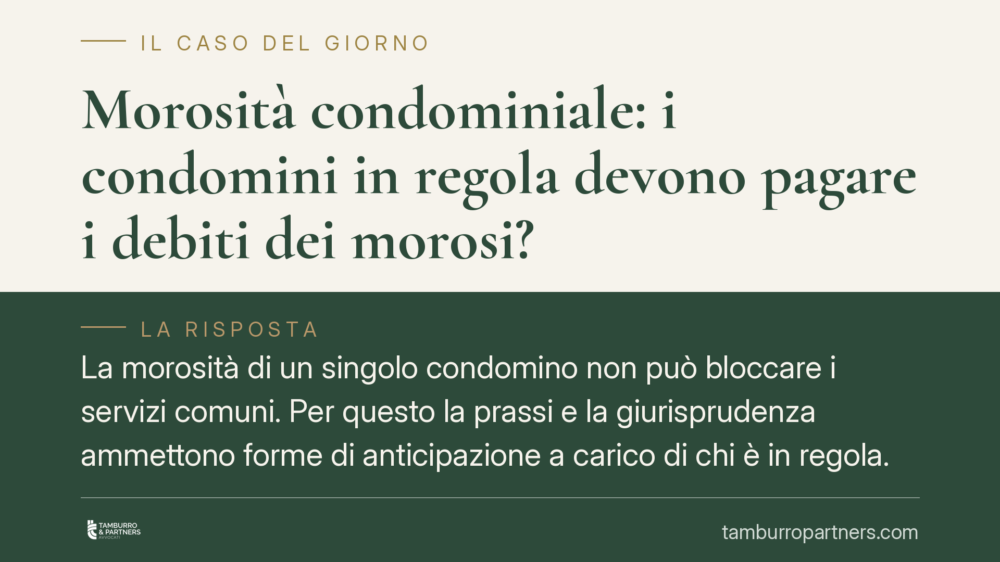

Morosità condominiale: i condomini in regola devono pagare i debiti dei morosi?
La morosità di un singolo condomino non può bloccare i servizi comuni. Per questo la prassi e la giurisprudenza ammettono forme di anticipazione a carico di chi è in regola. Ma c'è un limite preciso tra anticipazione temporanea e accollo forzato del debito altrui. Capire dove passa questa linea è decisivo per chi paga puntualmente le spese condominiali.

Il problema: morosità che ricade sui condomini in regola
Un condomino non paga le quote. I fornitori, però, vogliono essere saldati: l'impresa di pulizie, il manutentore dell'ascensore, la società che eroga il riscaldamento centralizzato. L'amministratore deve trovare la liquidità per mandare avanti il condominio.
La domanda ricorrente è semplice: chi copre l'ammanco causato dal moroso? E soprattutto, quel costo può diventare definitivo per chi ha sempre pagato?
Inquadramento: obbligazione parziaria, non solidale
Il punto di partenza è l'articolo 1123 del Codice civile, che ripartisce le spese tra i condomini in base ai millesimi di proprietà. Ciascuno risponde della propria quota: l'obbligazione condominiale è parziaria, non solidale.
Significa, in concreto, che il condomino in regola non è tenuto a pagare la parte del vicino moroso. La Cassazione, con la nota sentenza a Sezioni Unite n. 9148/2008, ha chiarito che il creditore del condominio deve prima rivolgersi ai condomini morosi, i cui nominativi l'amministratore è obbligato a comunicare ai sensi dell'articolo 63 delle disposizioni di attuazione del Codice civile. Solo in via sussidiaria, e nei limiti della rispettiva quota, può aggredire gli altri.
Questo principio tutela i condomini virtuosi. Ma la gestione corrente del condominio ha bisogno di cassa immediata, e qui entra in gioco un diverso strumento: il fondo di anticipazione.
Il fondo di anticipazione: strumento legittimo ma temporaneo
Per non interrompere i servizi essenziali, l'assemblea può deliberare che i condomini in regola anticipino le somme non versate dai morosi. Si tratta di una anticipazione, non di un pagamento a fondo perduto: le somme versate sono recuperabili, perché il credito del condominio verso il moroso resta pienamente attivo.
La delibera che istituisce questo fondo rientra nell'ordinaria amministrazione e può essere assunta a maggioranza. Il presupposto è che si tratti di una misura provvisoria, strumentale alla prosecuzione dei servizi, e non di una rinuncia al recupero del credito.
Il confine delicato è proprio questo. Finché l'amministratore agisce per recuperare le somme dal moroso (decreto ingiuntivo, pignoramento, iscrizione di ipoteca), l'anticipazione resta tale. Il condomino virtuoso ha un credito che, prima o poi, dovrebbe rientrare.
Quando l'anticipazione diventa accollo forzato
Il problema sorge quando il credito verso il moroso diventa irrecuperabile: il debitore è nullatenente, il pignoramento è andato deserto, l'immobile è gravato da ipoteche che assorbono il ricavato dell'eventuale vendita.
In questi casi il condominio tende a procedere allo stralcio contabile del credito, cioè a cancellarlo dalle scritture come inesigibile. Ma lo stralcio ha una conseguenza pesante: trasforma un'anticipazione temporanea in una perdita definitiva, che ricade sui condomini in regola in proporzione ai loro millesimi.
Qui l'anticipazione smette di essere tale e assume i tratti di un accollo forzato del debito altrui. Ed è su questo passaggio che si gioca la legittimità della delibera: non è pacifico che una decisione a maggioranza possa imporre ai condomini virtuosi di accollarsi in via definitiva un debito che per legge è parziario.
Implicazioni pratiche per chi paga puntualmente
Per il condomino in regola la differenza è sostanziale. Versare un'anticipazione recuperabile è una cosa; ritrovarsi la quota del moroso addebitata a bilancio come perdita definitiva è un'altra.
L'amministratore ha un obbligo preciso: attivarsi senza ritardo per il recupero, perché l'inerzia che rende il credito inesigibile può esporlo a responsabilità. La delibera di stralcio, inoltre, deve essere trasparente, motivata e documentata, e non può limitarsi a scaricare l'ammanco sugli altri senza aver prima esaurito ogni azione di recupero.
Cosa fare in concreto
- Verificate la natura della delibera: distinguete sempre tra un fondo di anticipazione recuperabile e una delibera di stralcio che addebita la perdita in via definitiva.
- Pretendete la documentazione del recupero: chiedete all'amministratore prova delle azioni intraprese contro il moroso (decreto ingiuntivo, pignoramenti, ipoteche) prima di approvare qualunque stralcio.
- Impugnate le delibere illegittime entro trenta giorni dalla data della deliberazione, se contrarie ai millesimi o lesive del principio di parziarietà.
- Fate verbalizzare il dissenso rispetto alle liti condominiali, per circoscrivere la vostra esposizione verso i creditori.
- Richiedete un bilancio chiaro sulla morosità, con l'indicazione analitica delle somme anticipate e di quelle a rischio di inesigibilità.
---
*Contributo informativo a cura di Tamburro & Partners - Avv. Giuseppe Tamburro. Non costituisce parere legale.*
Ogni condominio ha una storia a sé.
Se gestisci un'amministrazione e vuoi un confronto su una specifica questione condominiale, scrivi allo studio. Ti rispondiamo entro un giorno lavorativo.